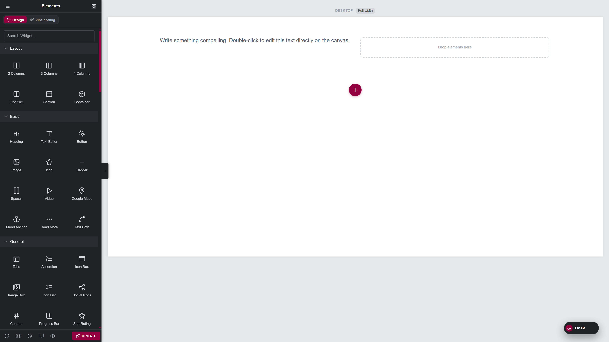
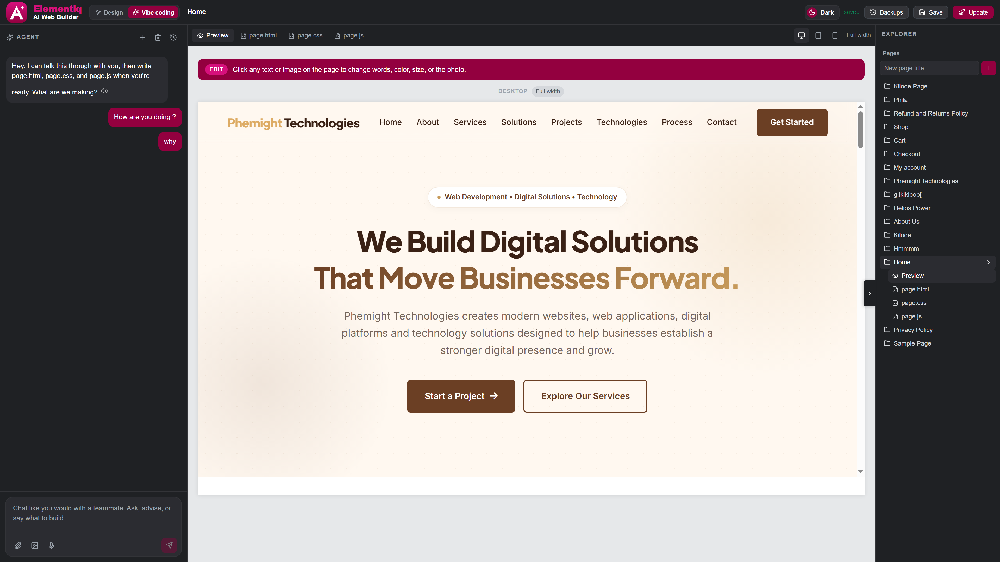
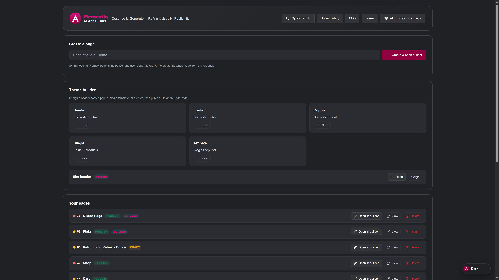
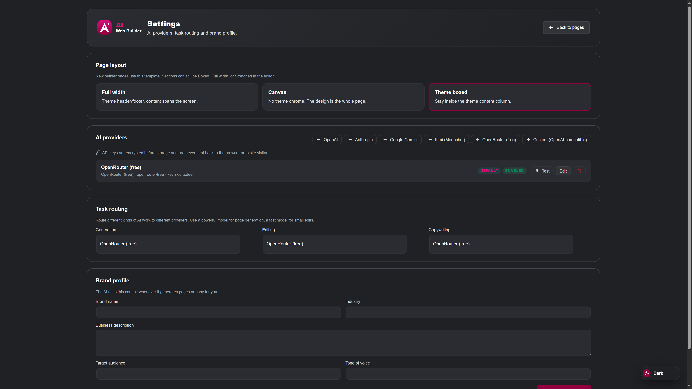

01
Build visually
Open Design to drag widgets, create layouts, and style the page on a canvas. No code required.
WordPress plugin. Design and Studio.
Elementiq is a powerful WordPress website builder that combines visual design and AI powered coding in one simple workflow. Use Design to build pages visually with drag and drop widgets, layouts, and other elements. Switch to Studio to describe what you want and let AI create and edit real HTML, CSS, and JavaScript, while making changes directly from the live preview. When your design is ready, save and publish it directly on your WordPress website.
NewSection tools, page switcher, website cloning, and forms. See how →

Full screenshot. Design tab, Search Widget, layout, basic elements, and canvas.
How it works
Elementiq installs as a plugin. You open it from the WordPress dashboard, choose Design or Studio, then save the page on your site. Nothing is exported to another host.
Open Design to drag widgets, create layouts, and style the page on a canvas. No code required.
Open Studio to describe what you want. AI can create or edit real HTML, CSS, and JavaScript.
In Studio, click the live preview to change text, colors, sizes, and images, then save the page in WordPress.
Two editors
The main visual drag and drop editor. Add widgets, arrange layouts, edit content, and style the page on the canvas. Best when you want to see and move every block yourself.
The AI assisted coding workspace. Describe the page in chat. Studio writes real HTML, CSS, and JavaScript. Then refine the result on the live preview. Best when you want speed and deeper code control.
Design
Search the Elements library, drop a heading or a column, then use the inspector to change text, colors, spacing, and images. Preview desktop, tablet, and mobile before you save.
Design: widget library on the left, canvas in the center, inspector on the right.

Studio: chat, live preview, and page files in Explorer.
Studio
Studio is not another copy of Design. You describe the page, AI writes the code, and the preview shows the result. Click an element to change words, color, size, or the image without leaving the preview.
Inside WordPress
After you activate Elementiq, it appears in the WordPress admin menu. Create a page, open it in Elementiq, then choose Design or Studio. Visitors see a normal WordPress permalink when you publish.

Pages is the home of Elementiq inside the WordPress dashboard.
Also included
Elementiq designs the shop. WooCommerce sells. Ask for a store and the AI uses live products, cart, and checkout.
Titles, descriptions, social cards, and a content score on each page. Find it under Elementiq → SEO.
Scan files, harden WordPress, and open File Manager from the same plugin menu.
AI setup
Design works as a visual editor on its own. Studio needs an AI provider and API key in Settings. You bring your own key. What the AI can do depends on the provider you connect. Providers are not free unless that provider says so.

Settings: layout templates and AI providers.
At a glance
Next step
Upload the plugin ZIP in WordPress, activate it, then create a page and start in Design or Studio.